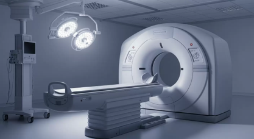
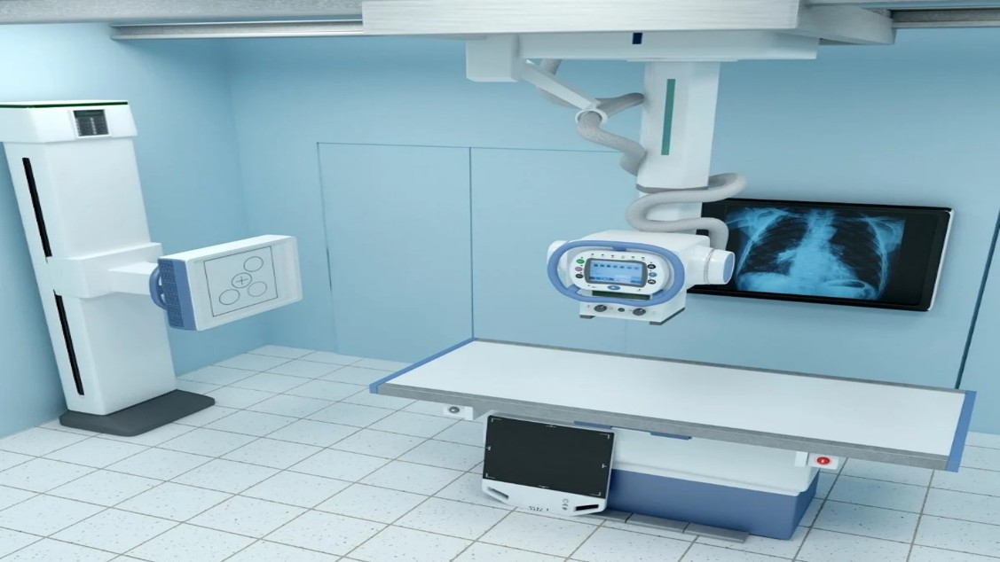
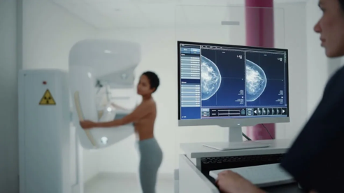

Наши услуги
Описание и интерпретация проведенных исследований по следующим видам диагностики
МРТ
МРТ (магнитно‑резонансная томография) — это метод исследования внутренних структур организма, основанный на использовании магнитного поля и радиоволн.
Что можно исследовать с помощью МРТ
Метод особенно эффективен для визуализации мягких тканей:
- головной мозг — выявление опухолей, кровоизлияний, сосудистую патологию;
- позвоночник — диагностика грыж межпозвоночных дисков, спондилёза, опухолей;
- сердце и сосуды — оценка анатомических особенностей, аномалий, дефектов;
- мышцы и суставы — обнаружение растяжений, разрывов, воспалений.

КТ
РКТ — рентгеновская компьютерная томография — метод диагностики, при котором компьютер воссоздаёт модель изучаемого объекта после его послойного сканирования с помощью узкого пучка рентгеновского излучения.
Что можно исследовать с помощью РКТ
Исследование органов грудной клетки — диагностика опухолей, воспалительных заболеваний лёгких и средостения, патологии крупных сосудов.
Исследование органов брюшной полости — визуализация травм, опухолевых и других поражений печени, жёлчного пузыря, селезёнки, поджелудочной железы.
Исследование позвоночника — выявление травм, дегенеративно-дистрофических изменений.
Исследование костей и суставов — подтверждение сложных травматических, воспалительных и опухолевидных поражений.

Рентген
Рентгенография (рентген) — метод медицинской диагностики, при котором на исследуемую область тела направляется поток рентгеновского излучения.
Область применения рентгенографии:
- рентген костей и суставов;
- рентгенография грудной клетки;
- рентген позвоночника: шейного, грудного, поясничного отделов;
- рентген черепа и придаточных пазух носа;
- рентген органов брюшной полости;
- ангиография — контрастное исследование сосудов.

Маммография
Маммография — это рентгенологическое исследование молочных желез, которое позволяет выявить различные патологии, включая злокачественные новообразования.
Цель маммографии
Цель маммографии — выявление изменений в структуре тканей молочной железы. С помощью исследования можно обнаружить:
- фиброаденому — плотное узелковое образование;
- кисту — полость с жидкостью;
- кальцинаты — участки отложения кальция;
- уплотнения и деформации тканей;
- злокачественные опухоли на ранней стадии.
Флюорография
Флюорография — это метод рентгенологического исследования, при котором изображение органов грудной клетки регистрируется цифровой матрицей.
Заболевания, которые можно обнаружить с помощью флюорографии:
Туберкулёз лёгких, крупные новообразования (опухоли), массивные воспалительные процессы.
Мультимодальные исследования
Мультимодальная диагностика — комплексный подход к анализу данных нескольких методов визуализации для получения полной клинической картины.
- Сопоставление данных МРТ, КТ, рентгенографии
- Динамическое наблюдение за состоянием пациента
- Консилиум специалистов для сложных случаев